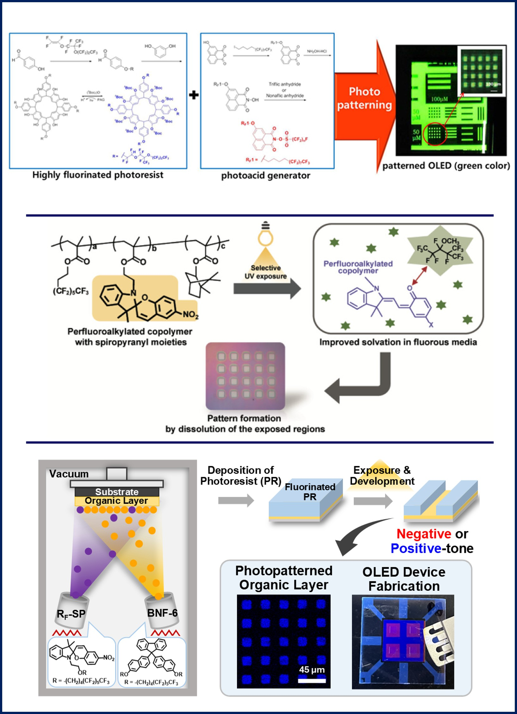

RESEARCH
02. Highly Fluorinated Resists for OLED Pixel Patterning
Goal
To develop novel imaging protocols based on radical and fluorine chemistry. Our research aims to enable the fabrication of high-resolution OLED pixel banks without damaging sensitive organic active layers.
Research Activities
- Synthesis of fluorinated resist materials and optimisation of the photolithography processes using fluorous solvents.
- This orthogonal processing ensures the integrity of organic semiconductors during device production.
Selected Publications
- "Highly soluble fluorous alkyl ether-tagged imaging materials for the photo-patterning of organic light-emitting devices"
- "Photoinduced Solubility Modulation in the Copolymers of Fluoroalkyl, Spiropyranyl, and Isobornyl Methacrylates"
- "Vacuum-Depositable Fluorinated Photoresist toward Organic Light-Emitting Diode (OLED) Patterning"